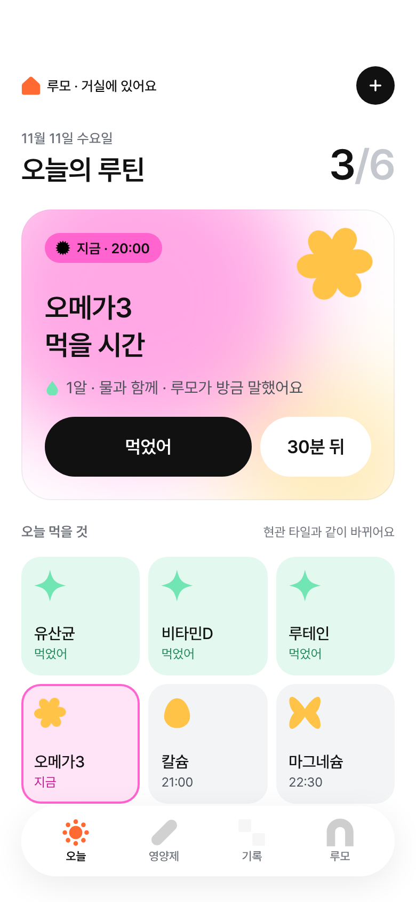
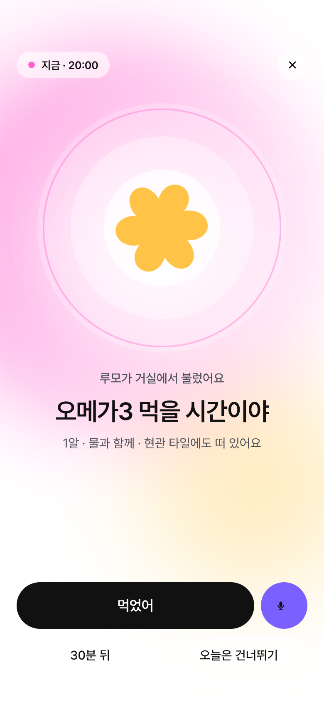
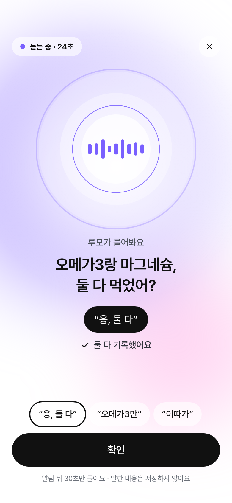
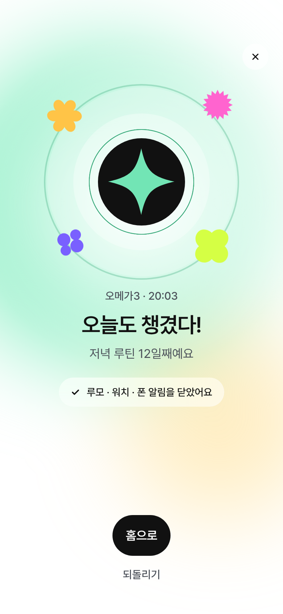

말"먹었어" 한 마디루모가 알아듣고 끄덕여요. 알림 뒤 30초만 들어요.
영양제 먹을 시간이 되면 먼저 불러 주는,
집 안에 사는 작은 AI 로봇 루모.
영양제는 사는 것보다 매일 먹는 게 어려워요. 알림은 끄면 끝이고, 먹었는지는 기억이 안 나요. 그래서 루모가 먼저 불러요.




루모가 먼저 부르고, 15분 뒤엔 워치, 30분 뒤엔 폰. 90분이 지나면 놓침으로만 남기고 혼내지 않아요.
올려보면 뜻이, 흩어보면 리듬이 보여요. 휴대폰에서는 눌러 보세요.
지금은 핑크, 먹었으면 민트, 미루면 노랑. 로봇 · 타일 · 워치 · 앱이 같은 색으로 말해요.